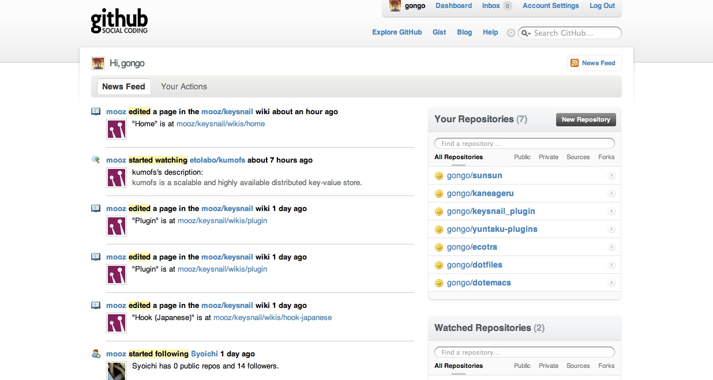
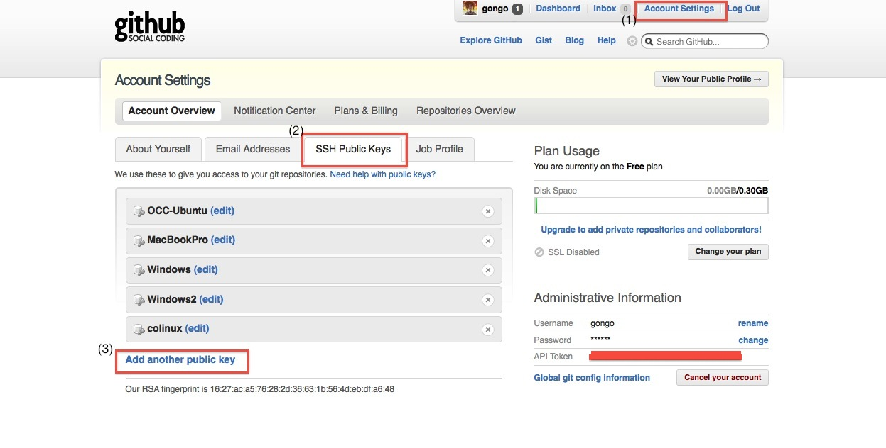
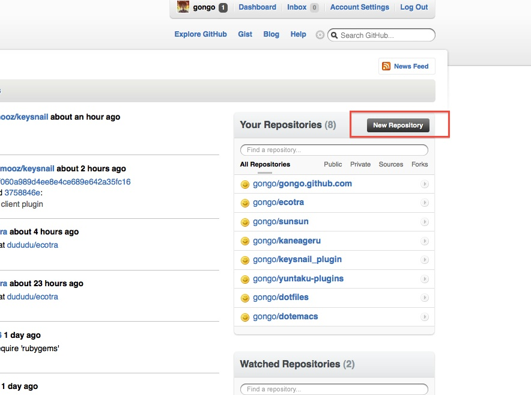
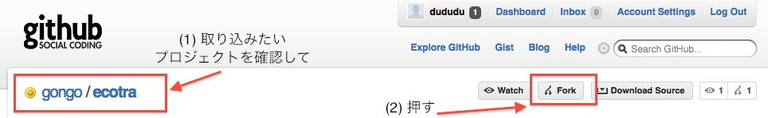
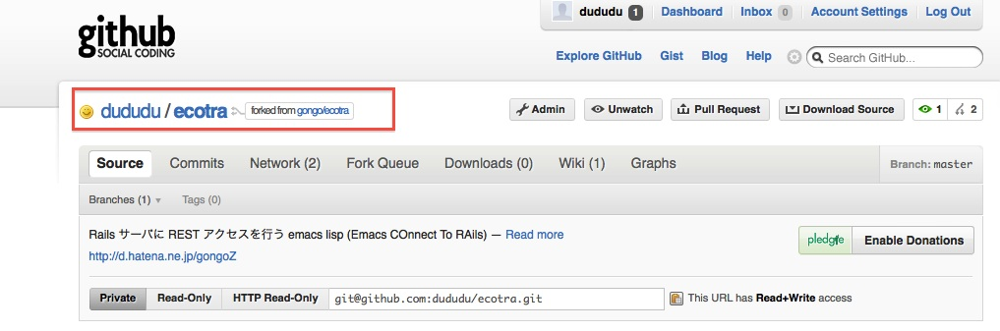

GitHub
講師 gongo
GitHub とは
Online project hosting using Git. Includes source-code browser, in-line editing, wikis, and ticketing. Free for public open-source code.
(via GitHub )
ホスティング(サービス)って？
サーバの利用者自身でサーバの運営・管理をしなくてもいいように、 有料または無料でサーバ機のHDDの記憶スペースや 情報処理機能などを利用させるサービス
(via ホスティングサーバ - Wikipedia:)
リポジトリホスティングサービス一覧
| name | SCM (Source Code Management) |
|---|---|
| GitHub | Git |
| SourceForge | Subversion, Git, Mercurial, Bazaar, CVS |
| Google Code | Subversion, Mercurial |
| RubyForge | Subversion, Git, CVS |
GitHub のトップページはこんな感じ

基本的な使い方
ユーザ側として
ソースコードをダウンロードするには
- 検索して git clone
これだけ！
| rails | http://github.com/rails/rails/ |
| rspec | http://github.com/dchelimsky/rspec/ |
| cucumber | http://github.com/aslakhellesoy/cucumber |
| citrus-plugins | http://github.com/Tomohiro/citrus-plugins |
基本的な使い方 開発者側として
鍵登録しておかないと！

基本的な使い方 開発者側として
リポジトリを作ってみよう

基本的な使い方 (Con't)
サイトも作れる http://pages.github.com/
repository name を [username].github.com にして その中に HTML ファイルとかを置くと
にアクセスして閲覧可能
他の人のプロジェクトに介入しよう
github の fork を使おう
ちなみに fork ってなに
訳go より
- フォーク
- くま手、またぐわ
- (川・道路などの）分岐点;別れ道、分流、分枝
- ［干し草など］‘を'くま手でかき上げる（刺す）
- （川・道路・枝などが）分岐する
- ［人が］（左右の）別れ道をとる
他の人のプロジェクトに介入しよう (Con't)
とにかく fork してみよう

自分のリポジトリに出現

fork された側はこんな感じ

他の人のプロジェクトに介入しよう (Con't)
自身の変更、つまりパッチを本家リポジトリに適用してほしい
という願いが込められた github の機能 Pull Request

他の人のプロジェクトに介入しよう (Con't)
pull request 受け取った人は
% git remote add dududu git://github.com/dududu/ecotra.git % git fetch dududu % git checkout master % git diff dududu/ecotra #<- こいつで問題ないなら次へ % git merge dududu/ecotra % git push
以前 clone して編集したやつを pull request したい時
Gist
Gist ってなんぞや
github で提供している、コードの断片共有サービス。 web 上からペーストして作成、編集が可能で、 それらのコードは git レポジトリとして clone 可能。 また web 上から fork して開発も行える。
(via gistとは - はてなキーワード:)
Gist 例
Gist でも fork できる
- kotastumikan (master) http://gist.github.com/280017
- Tomohiro [http://gist.github.com/280025]
- gongo [http://gist.github.com/280029]
gisty
command line client for gist
| command | description |
|---|---|
| gisty list | show local list. |
| gisty post file1 file2 ... | post new gist. |
| gisty private_post file1 file2 ... | post new private gist. |
| gisty sync | sync remote gist. (clone all remote gist) |
| gisty sync_delete | sync remote gist. delete local gist if remst was deleted. |
| gisty pull_all | pull all gist. |
| gisty about | show about gisty |
| gisty help | show help |
現version では proxy 設定が行えない(社内からじゃむりぽー)